Missão
Lutar por justiça para quem não tem voz.
A ONG SRD (Sem Raça Definida) combate os maus-tratos contra animais em Caxias do Sul. Averiguamos denúncias, resgatamos quem está em perigo e buscamos um lar responsável para cada um.
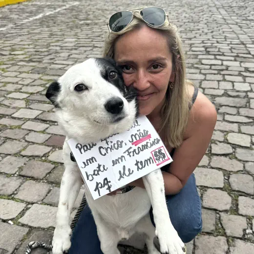
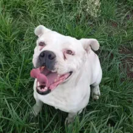
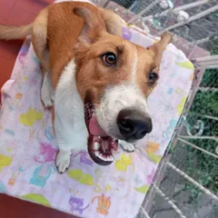
Nascemos do inconformismo de pessoas que se recusaram a fechar os olhos para o sofrimento animal e doaram seu tempo para fazer o bem.
Hoje somos uma organização sem fins lucrativos que atua todos os dias na averiguação de crimes de maus-tratos em Caxias do Sul (RS). A ONG foi fundada e é presidida por Andressa Mallmann e se mantém com o trabalho de voluntárias e voluntários, com a renda do Brechó SRD e com doações da comunidade.
Lutar por justiça para quem não tem voz.
Uma Caxias do Sul em que nenhum caso de maus-tratos fique sem resposta e em que cada animal resgatado encontre um lar responsável.
Nosso trabalho segue as Cinco Liberdades do bem-estar animal. Todo animal deve viver:
Em setembro, a ONG participou, com a Brigada Militar e a Polícia Civil, do resgate de gatos vítimas de tortura no bairro Santa Fé. O suspeito foi preso em flagrante e o caso segue na Justiça.
Em maio, a SRD resgatou 62 animais, 50 cães e 12 gatos, em Caxias do Sul, Roca Sales, Novo Hamburgo e Estrela. Em março, uma operação com a Polícia Civil no Centro tirou quatro cães e duas calopsitas de uma situação de maus-tratos.
Em fevereiro, uma exposição de fotos na Câmara de Vereadores apresentou os animais à espera de adoção. Em junho, a ONG anunciou o fim das atividades por falta de recursos, mas seguiu atuando e continua ativa.
Em julho, o 1º Arraiá beneficente reuniu a comunidade na sede, com entrada mediante 1 kg de ração. Em agosto, uma denúncia acompanhada pela ONG levou à prisão em flagrante de uma suspeita de maus-tratos contra um pitbull.
Do chamado ao novo lar: este é o caminho de um caso de maus-tratos dentro da ONG.
Tudo começa com um aviso. Quem presencia maus-tratos envia fotos, vídeos e o endereço pelo WhatsApp da ONG ou pelo canal da Prefeitura.
Uma equipe vai até o local verificar a situação, com apoio de veterinários e, quando preciso, da Guarda Municipal, da Brigada Militar e da Polícia Civil.
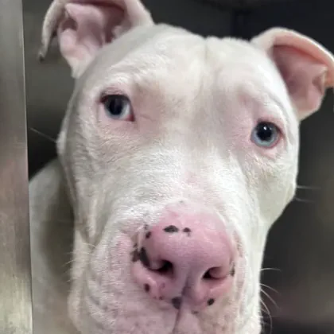
Quando o animal corre risco, ele é retirado do local e levado para atendimento. Foi assim que o Farelo, hoje à espera de adoção, saiu de um cenário muito triste.
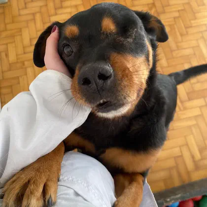
Cada resgatado passa por exames e recebe tratamento, vacinas, vermífugo e castração. A recuperação acontece em lares temporários e clínicas parceiras.
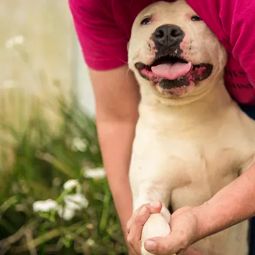
Recuperado, o animal ganha um perfil para adoção. Quem se interessa passa por entrevista, visita o animal e assina um termo de responsabilidade.
Enquanto o animal se recupera, o caso segue com as autoridades. A ONG encaminha as provas e acompanha o andamento para que os agressores sejam responsabilizados.
Venda de roupas, calçados e objetos doados. É a maior fonte de renda da ONG.
Conheça o brechóDivulgação dos animais resgatados que estão prontos para ganhar uma família.
Ver os petsOrientação sobre o que são maus-tratos e como denunciar com segurança.
Saiba como denunciar62 animais resgatados em quatro cidades gaúchas e abrigados em um pavilhão emprestado até a recuperação.
a
Fotos dos cães e gatos à espera de um lar no Espaço Cultural Mário Crosa, na Câmara Municipal de Caxias do Sul.
Festa na sede com shows, comidas típicas e desfile pet. A entrada era 1 kg de ração, e a renda foi para tratamentos, alimentação e resgates.
Números acumulados divulgados pela ONG em seu site oficial (consulta em outubro de 2026).
62 animais resgatados durante as enchentes de maio de 2024, em Caxias do Sul, Roca Sales, Novo Hamburgo e Estrela.
Animais acolhidos pela SRD e momentos do dia a dia da ONG. Clique em uma foto para ampliar.
Estes animais foram retirados de situações de maus-tratos e esperam por uma família (lista de outubro de 2026).
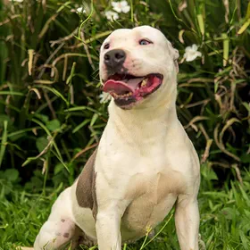
Fêmea, 3 anos, porte médio
Sou super carismática e gosto muito de brincar.
Quero adotar a AtenaMacho, 3 anos, porte grande
Sou um gigante com um grande coração.
Quero adotar o Farelo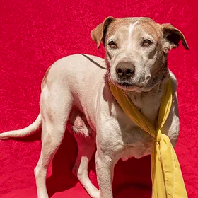
Fêmea, 16 anos, porte médio
Sou uma senhorinha calma, dócil e gentil.
Quero adotar a Estela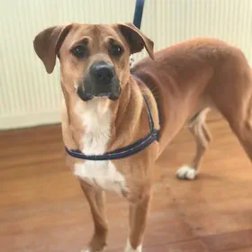
Macho, 2 anos, porte grande
Procuro uma família que adote meu irmão Tico e eu juntos.
Quero adotar o BebêMacho, 2 anos, porte grande
Sou irmão do Bebê e também espero uma família.
Quero adotar o Tico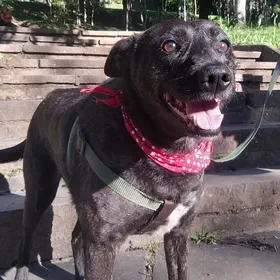
Fêmea, 6 anos, porte médio
Sou meiga, dengosa e amo correr.
Quero adotar a Nega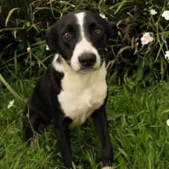
Macho, 3 anos, porte médio
Sou um neném que ama carinho.
Quero adotar o Pitoco
Macho, 6 anos, porte grande
Sou cheio de energia e adoro brincar.
Quero adotar o Franco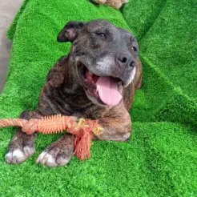
Fêmea, 7 anos, porte grande
Gosto muito de brincar e de ganhar carinho.
Quero adotar a Cecília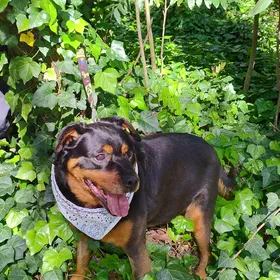
Macho, 6 anos, porte grande
Sou calmo e adoro brincar de bolinha.
Quero adotar o Gordo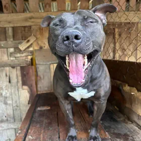
Macho, 2 anos, porte grande
Faço adestramento e preciso ser o único animal da casa.
Quero adotar o Latrel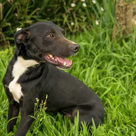
Macho, 3 anos, porte médio
Sou tímido e me assusto com agitação.
Quero adotar o Bebezinho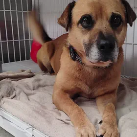
Macho, 6 anos, porte médio
Gosto de outros animais e de uma boa soneca.
Quero adotar o Tonico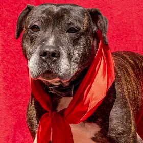
Macho, 6 anos, porte grande
Amo carinho e preciso ser o único pet da casa.
Quero adotar o Pedrito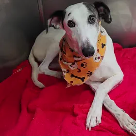
Macho, 5 anos, porte grande
Amo carinho e brinco com outros bichinhos.
Quero adotar o Costela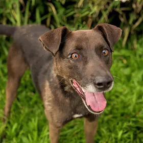
Macho, 5 anos, porte médio
Sou dócil, um pouco assustado, e prefiro ser o único pet.
Quero adotar o BatmanMaus-tratos não são apenas agressões físicas. É qualquer ato que cause dor, sofrimento ou afete o bem-estar de um animal.
Maus-tratos a animais é crime (Lei 9.605/1998, art. 32). Contra cães e gatos, a pena é de 2 a 5 anos de reclusão, multa e proibição da guarda (Lei 14.064/2020).
Se a agressão estiver acontecendo agora, ligue 190.
O trabalho da SRD depende de doações. São elas que pagam consultas, cirurgias, ração e lares temporários.
Chave PIX (e-mail)
ongsrdoficial@gmail.com
Ração, areia, sachê e brinquedos podem ser entregues na sede, sem horário marcado: Rua Sarmento Leite, 3090, Rio Branco. De segunda a sábado (exceto quinta), das 13h30 às 17h. Dúvidas: (54) 98423-3287.
Quer doar seu tempo? Há espaço no brechó, nos eventos beneficentes e na divulgação dos animais para adoção.
Quero ser voluntárioEmpresas e profissionais podem apoiar com produtos, serviços, descontos ou campanhas, como fazem os parceiros da SRD.
Quero ser parceiro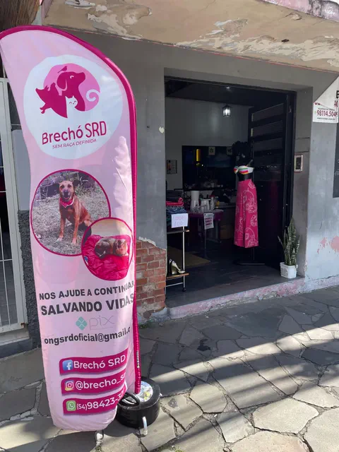
Peças com história e renda para os resgates.
O brechó nasceu de uma força-tarefa para pagar o tratamento da cadela de uma voluntária. A dívida foi quitada, o projeto continuou e hoje é a maior fonte de renda da ONG. Lá você encontra roupas, calçados, acessórios e itens decorativos, todos doados por apoiadores da causa animal.
Empresas e profissionais que apoiam o trabalho da SRD.
Dúvidas, sugestões ou propostas de parceria? Escreva para a gente.
Dúvidas sobre doações: (54) 98423-3287
E-mail: ongsrdoficial@gmail.com
Rua Sarmento Leite, 3090, Rio Branco
Caxias do Sul (RS), CEP 95084-000
Atendimento de segunda a sábado (exceto quinta), das 13h30 às 17h.